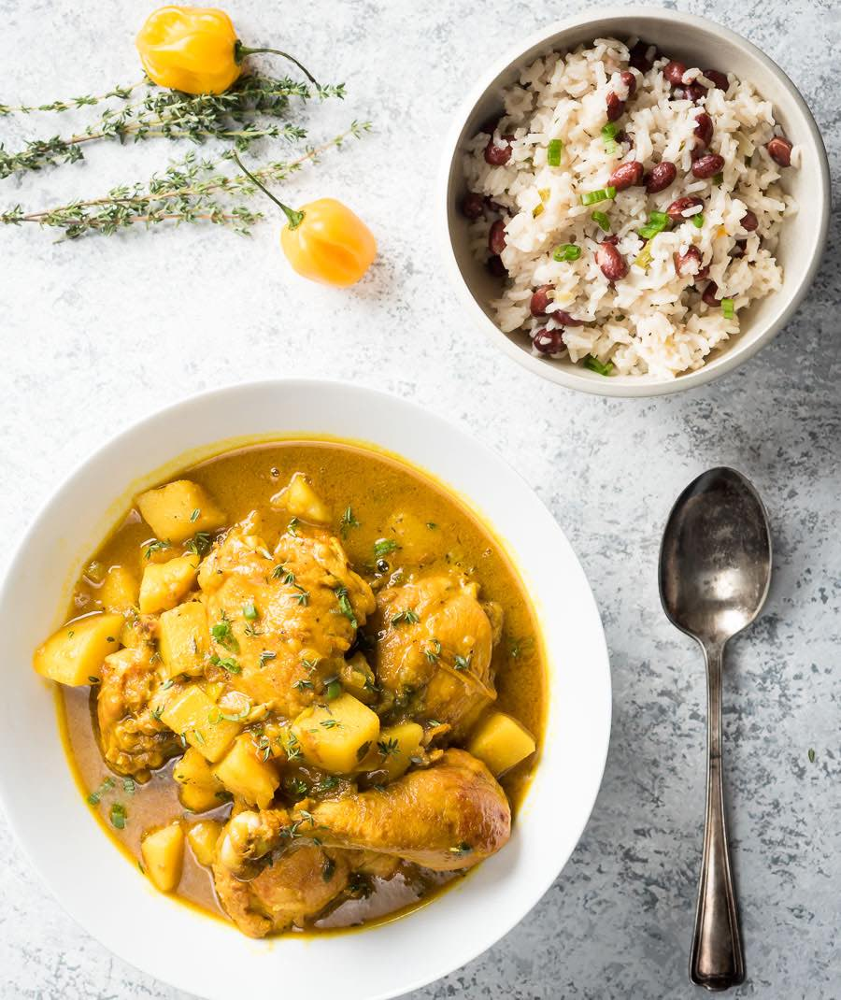

Jamaican Curry Chicken Recipe

Traditional Jamaican Curry Chicken Recipe
There’s nothing more comforting than chicken and potatoes, and this recipe is no exception. Getting its flavor and heat from a combination of mild Jamaican curry powder and Scotch bonnet pepper, it’s not as hot as some Indian or Thai curries.
Jamaican curry powder tends to be heavy on turmeric and less on spice, and this recipe uses just one Scotch bonnet pepper, which is kept whole but punctured to gently release flavor. The result is more warming than spicy. Eat this one-pot recipe by itself as a kind of stew, or over rice, letting all the flavors meld together.
Ingredients
- 1 whole chicken (about 2.5lb - 3lb)
- 6 tablespoons of Jamaican curry powder
- 2 potatoes
- 1.5 tablespoons of vegetable oil
- 2 cups water
- 1 onion
- 3 stalks scallion
- 5 sprigs fresh thyme
- 4 cloves garlic
- 2 hot peppers (ideally scotch bonnet)
- 2 teaspoons salt
- 2 teaspoons salt
- 2 teaspoons pepper
Preperation
- Wash the chicken in lemon or lime Juice.
- Chop the chicken up in to small pieces.
- Chop the onion, scallion, pepper and garlic in to small pieces.
- Rub all of the ingredients (apart from the potatoes and water) in to the chicken and allow to marrinate in the fridge for 2 hours.
- Chop the potato in to small pieces.
- Fry the chicken intil the chicken is sealed (5-10 minutes).
- Add the potatoes and water to the pan, cover and fry until the sauce has a thick consistency (about 1 - 2 hrs).